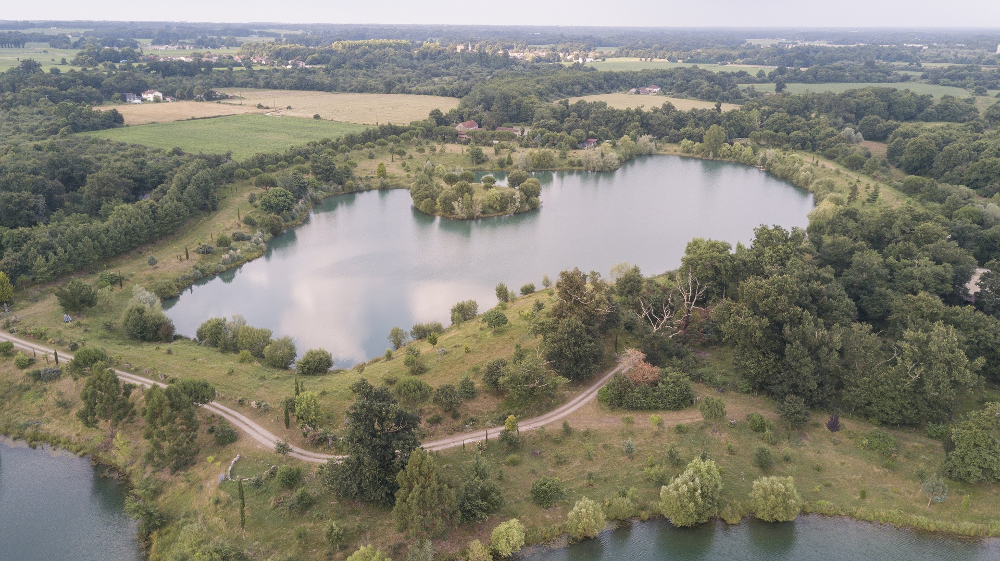
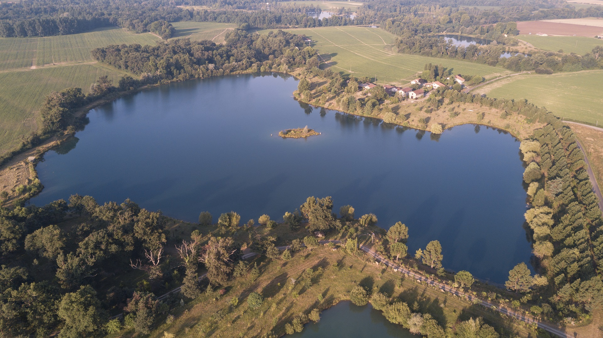

La pêche

Nous proposons la pêche en "no kill" pour les passionnés, amateurs ou simplement ceux qui souhaitent découvrir cette activité dans un cadre aussi idéal que celui du Domaine de Passepay avec ses 2 lacs, ses grandes étendues et ses gites.
Concernant les lacs, ce ne sont pas des piscicultures, il s'agit de poissons sauvages à 70% et donc une pêche relativement technique. Lacs de gravière d'une quinzaine d'année, relativement profonds, propre avec une eau claire.
Nos 2 lacs
Le forfait pêche vous donne accès à l'intégralité de notre domaine. Vous pouvez donc pêcher dans nos 2 lacs : Escourros (6 hectares) et Passepay (9 hectares).
-
Lac d'Escourros
Lac de gravière de 6 hectares avec une eau claire. Profondeur maximale : 10m. Profondeur moyenne : 4m.
Poissons présents :
- Brochets : Poisson dominant, bonne population, se reproduisent sur le site, poissons sauvages et combatifs, taille moyenne : 65cm, plusieurs métrés, record 1m19
- Black bass : Bonne population, gros spécimens, taille moyenne : 40cm, record : environ 60cm (2008)
- Perches : Moyenne : 30cm, record : 49cm


-
Lac de Passepay
Lac de gravière de 9 hectares avec une eau claire. Profondeur maximale : 10m. Profondeur moyenne : 4m.
Poissons présents :
- Black bass : Poisson dominant, bonne population, reproduisent sur le site, poissons sauvages et combatifs, taille moyenne : 40cm, record : 58cm
- Perches : Moyenne : 30cm, record : 47cm
- Sandres : Poisson le moins présent sur le site, taille moyenne : 50cm, record 85cm


Matériel de pêche
Une barque ansi qu'un float tube avec des palmes sont mis à disposition pour chaque gîte de notre domaine.
Selon les réservations, du matériel supplémentaire peut également être mis à votre disposition, n'hésitez pas à nous contacter pour plus d'informations.